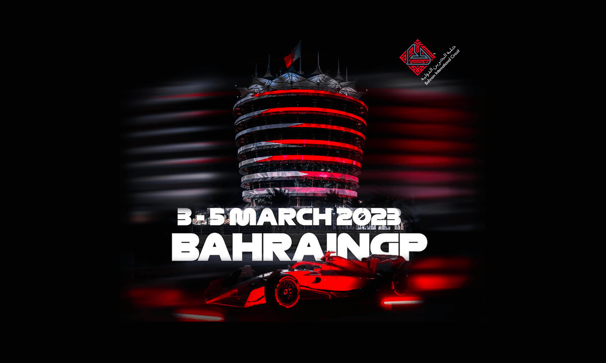
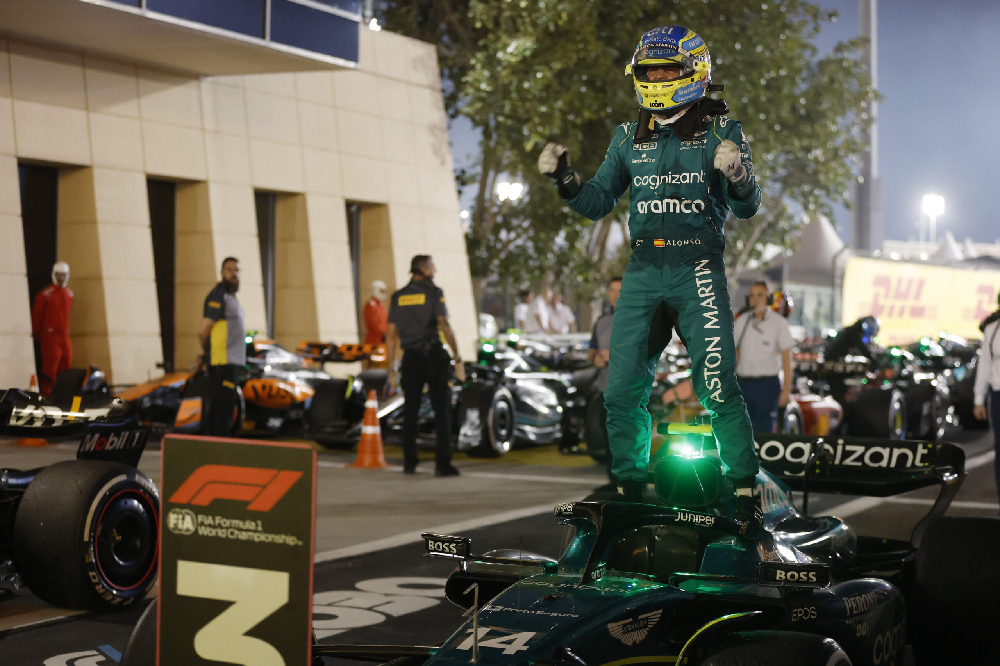

It proved the perfect race for Red Bull’s Max Verstappen as he kicked off his world drivers’ championship title defence in style by winning the 2023 Bahrain Grand Prix in dominant fashion. Starting from pole position, the Dutchman effectively led from start to finish as teammate Sergio Perez made it a one-two finish for last year’s constructors' championship victors. Just behind, Fernando Alonso rolled back the years to claim his 99th podium finish in F1 as he pushed out fellow Spaniard Carlos Sainz to finish in P3. The Bahrain Grand Prix proved another headache for Ferrari though, as Sainz’s teammate Charles Leclerc was forced to retire after his car suffered a huge failure whilst the Monegasque driver occupied P3. Lewis Hamilton, Lance Stroll, George Russell, Valtteri Bottas, Pierre Gasly and Alex Albon rounded out the points-paying position as Formula One returned.
Discover our last articles

The last race
Bahrain 2023

Return on last season
2022 season

The unexpected one
Fernando Alonso at Aston Martin